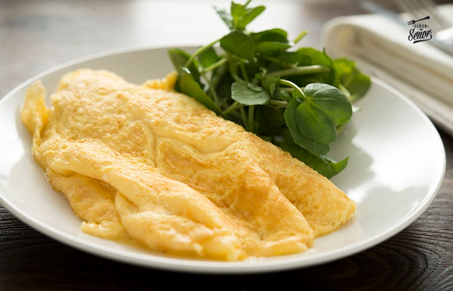

Receta para Tortilla Francesa
Esto es una receta sencilla para realizar una tortilla francesa P-E-R-F-E-C-T-A
Preparación tiempo
- Total: Aproximadamente 10 minutos
- Preparación: 5 minutos
- Cocinar: 5 minutos
Ingredientes
- Huevos
- Sal
- Pimienta
- Aceite de oliva virgen extra
- Opcional: Perejil
Instrucciones
- Bate los huevos en un cuenco
- Añade una pizca de sal y pimienta
- Opcional: Añade perejil
- Cocina a fuego medio durante 5 minutos en una sarten con un poco de aceite para que no se pegue y dale la vuelta para cocinarla durante 2 minutos mas
- Disfruta de tu Tortilla de Francesa Perfecta
Valores Nutricionales
La tabla de abajo muestra los valores nutricionales por tortilla sin añadidos extra:
| Calorías |
200 |
| Proteínas |
10g |
| Grasas |
5g |